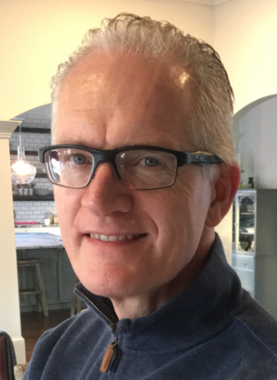

Peter Beha Wagner
Peter er Cand.Scient i Computer Science (datalogi) fra Københavns Universitet i 1990 samt HD fra CBS.
Har bl.a. været andet været ansat i den anerkendte danske IT-virksomhed Damgaard/Navision. Har de seneste 18 år boet i Atlanta, USA, hvor han arbejder for Microsoft.
Peter blev i 1998 gift med danske Trine Beha Erichsen. Parret har 7 børn sammen.
https://www.linkedin.com/in/peter-wagner-329604/